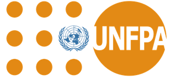
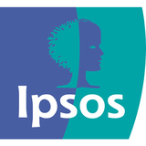
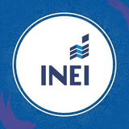

Datatón Nacional 2026 contra la violencia hacia niñas, adolescentes y mujeres
El 49.1% de mujeres peruanas de 15 a 49 años sufrió violencia de su pareja alguna vez, y el 45.9% de niñas y niños de 9 a 11 años sufrió violencia física o psicológica de sus padres en el último año: la violencia golpea tanto a mujeres como a la niñez y la adolescencia. Por eso el MIMP convoca este Datatón: transformar esos datos oficiales en evidencia aplicada que el Estado use en decisiones de prevención, atención, protección y sanción, a través del Observatorio Nacional de la Violencia contra las Mujeres y los Integrantes del Grupo Familiar, junto a UNFPA, Ipsos, Q-LAB PUCP y LabStat-INEI.
Prefieres verlo como varias páginas →Así se preparó cada equipo
Cinco módulos, de entender el problema a comunicar la solución con datos.
Los cinco módulos
Cada tarjeta trae el tema, las sesiones, los docentes y los materiales del módulo.
Por qué este datatón
Cifras oficiales citadas en las bases del concurso (ENDES 2025 y ENARES 2024) que sustentan la urgencia de generar evidencia aplicada bajo la Ley N.° 30364.
¿Por qué es necesario este datatón?
Las bases oficiales señalan que, si bien la Ley N.° 30364 sí ha tenido impacto —el indicador principal de violencia de pareja bajó 8.6 pp entre 2019 y 2025—, las cifras que siguen muestran que la magnitud del problema sigue siendo significativa y que la sociedad peruana mantiene una alta tolerancia hacia la violencia contra las mujeres. Esa combinación es la que justifica el datatón: no basta con describir la problemática, hace falta generar conocimiento aplicado a partir del análisis de datos cuantitativos, para identificar patrones, factores asociados y brechas en la implementación de la Ley N.° 30364 y su Reglamento — evidencia que el Estado pueda usar para tomar decisiones más efectivas de prevención, atención, protección y sanción.
Modelo ecológico de la violencia
La violencia contra las mujeres no tiene una sola causa: se explica por factores que van desde lo más amplio (la sociedad) hasta lo más cercano a la persona. Pasa el cursor (o toca en el celular) sobre cada nivel para ver ejemplos.
Cada nivel agrupa distintos factores asociados a la violencia contra las mujeres — desde lo más amplio (social) hasta lo más cercano a la persona (individual).
Fuente: adaptado de Bronfenbrenner (1979) y Krug et al. (2002) — citado en las Bases del Datatón Nacional 2026. Ejemplos ilustrativos del tipo de factores de cada nivel, no cifras oficiales.
Las cifras por departamento
El 49.1% de arriba es un promedio nacional — varía bastante entre departamentos. La violencia también golpea a la niñez: elige un indicador para ver cómo se distribuye en el país, tanto en mujeres como en niñas, niños y adolescentes.
Departamento más bajo: —. Más alto: —.
Fuente de los datos: INEI, ENDES 2025, cuadro 12.1.
Lima combina Lima Metropolitana y Región Lima mediante un promedio ponderado. Base cartográfica: peru-geojson, con contornos simplificados.
La ruta del Datatón
Cada etapa se marca automáticamente como completada, en curso o próxima según la fecha de hoy — vuelve a esta página cuando quieras ver en qué punto va el concurso.
Ciclo de formación
Del 07 de septiembre al 02 de octubre de 2026, modalidad híbrida y virtual sincrónica (Zoom). Es el eje central de preparación para la entrega final.
📄 = material de la sesión disponible para descargar (se va completando después de cada clase).
Asistencia al ciclo de formación
Registro oficial de asistencia por sesión de cada participante inscrito, tal como figura en el reporte del equipo organizador. Cada sesión tiene dos columnas porque hay dos registros distintos de esa fecha, y a veces no coinciden entre sí.
Docentes del ciclo de formación
Especialistas de MIMP, UNFPA, Ipsos y LabStat-INEI a cargo de cada módulo. Pasa el cursor sobre una tarjeta (o tócala en el celular) para voltearla y ver su sesión. Iremos completando las biografías a medida que las recibamos del equipo.
Evaluación y rúbricas
Tu nota final se arma en dos partes que se suman — así de simple: asistencia al ciclo de formación + tu entrega final.
Al ciclo de formación. Requisito: mínimo 75% de asistencia de los integrantes del equipo a las sesiones virtuales o híbridas.
Infografía + reporte, evaluados con la Rúbrica N.° 03 (detalle abajo). Requisito: mínimo 50 pts en el proyecto final.
Certificado de Curso a nombre de MIMP, UNFPA e IPSOS para quienes cumplan ambos requisitos.
¿Cómo se reparten los 70 pts del proyecto final? — Rúbrica N.° 03
Premios e incentivos
Los tres primeros puestos del Datatón Nacional 2026 reciben lo mismo — publicación, diploma y material bibliográfico — y el 1er puesto suma un reconocimiento adicional.
Para los 3 primeros puestos
- Publicación digital en el Repositorio del Observatorio Nacional
- Diploma de reconocimiento emitido por el MIMP
- Material bibliográfico especializado
+ extra: evento de presentación de los trabajos seleccionados
Recibe el reconocimiento compartido de arriba.
Recibe el reconocimiento compartido de arriba.
El Comité Organizador puede anunciar premios adicionales tras el lanzamiento. Ceremonia de premiación prevista entre el 16 y el 20 de noviembre de 2026.
Socios del Datatón
El Datatón Nacional 2026 se hace posible gracias a la articulación entre el Observatorio Nacional (MIMP) y sus aliados del ciclo de formación.
 Organiza
Observatorio Nacional de la Violencia
Organiza
Observatorio Nacional de la Violencia
Órgano del Ministerio de la Mujer y Poblaciones Vulnerables (MIMP) encargado de generar información y evidencia sobre la violencia contra las mujeres y los integrantes del grupo familiar. Convoca el Datatón Nacional 2026 y coordina el Comité Organizador.

Aliado UNFPAFondo de Población de las Naciones Unidas. Agencia de la ONU dedicada a la salud sexual y reproductiva y a la igualdad de género; aporta al ciclo de formación especialistas en población, datos y comunicación estratégica basada en evidencia.

Aliado IpsosEmpresa global de investigación de mercados y opinión pública. Aporta al ciclo de formación su experiencia en diseño muestral, estadística y análisis multivariado de encuestas.
Laboratorio de investigación aplicada en economía cuantitativa de la Pontificia Universidad Católica del Perú (PUCP). Contribuye con formación en programación y automatización de datos con Python.

Aliado LabStat · INEILaboratorio de Estadística del Instituto Nacional de Estadística e Informática (INEI). Aporta especialistas en ciencia de datos, visualización avanzada, metadata y agentes de inteligencia artificial aplicados a información pública.
Fuentes de datos recomendadas
De acceso público, abierto y gratuito. No se aceptan propuestas basadas únicamente en análisis descriptivo (tablas, gráficos o mapas sin análisis explicativo).
¿Consultas?
Para dudas técnicas o del proceso, contactar directamente al Comité Organizador del Observatorio Nacional.
- Correoobservatorioviolencia@mimp.gob.pe
- Central telefónica MIMP(01) 626-1600, anexo 8503
- Bases oficialesgob.pe/mimp — Datatón Nacional
—